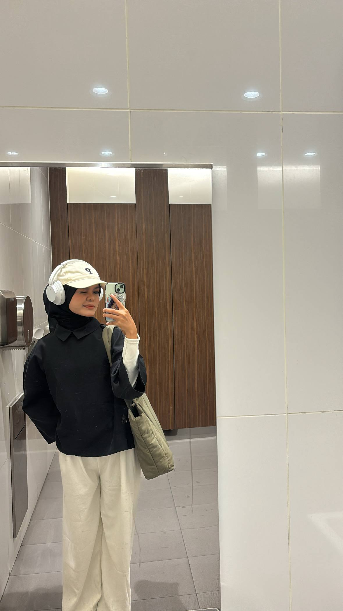
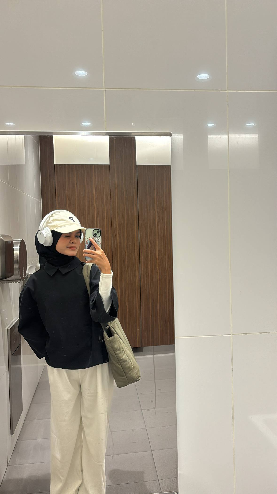

About Me
Hi! I’m Nur I’zaz Syahmina Binti Ruziha, a 20-year-old student from Rantau Panjang, Kelantan. I am the fifth out of six siblings and currently pursuing my Diploma in Information Management at Universiti Teknologi MARA (UiTM). Growing up in a small yet lively town has taught me to appreciate simple things and find joy in everyday moments.
I would describe myself as someone who truly enjoys learning and exploring new experiences. I’m naturally curious and always eager to discover something different, whether it’s through trying out new hobbies, meeting people, or creating something meaningful. One thing about me is that I’m completely in love with matchaa!! it’s my ultimate comfort drink and a little treat that never fails to make my day better 🍵.
I consider myself an ambivert; sometimes I enjoy quiet moments alone, and other times I can be very talkative and expressive, depending on the people and the atmosphere around me. I believe that balance is what keeps life interesting and helps me connect with others in different ways.
In my free time, I love fashion, photography, and nature. Fashion allows me to express who I am, photography helps me capture the beauty in little things, and nature gives me peace and inspiration. These interests not only make me happy but also let me see the world from creative and thoughtful perspectives.
My biggest dream is to build a successful and meaningful career while continuing to grow as a person. I want to keep improving myself, gaining knowledge, and becoming someone who inspires others to do the same. For me, life is about progress, kindness, and appreciating every small moment that shapes who we are.